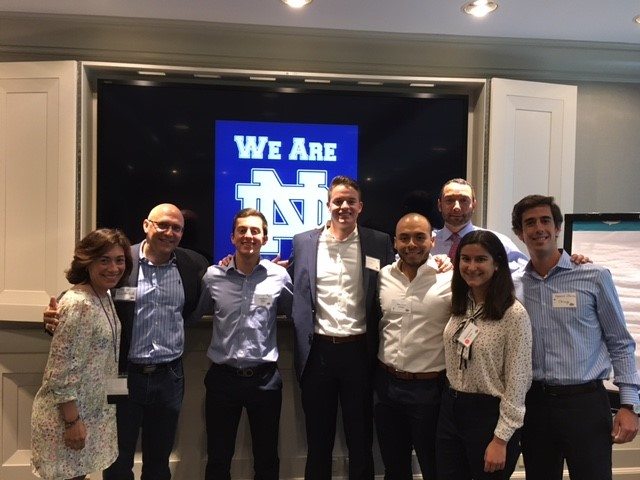

Accenture Internship
Digital Business Integration Consulting Analyst
 The summer of 2017 I lived the consulting dream. Working for Accenture and living downtown in the great city of Chicago, I was able to taste what life is for an adult consultant. The summer internship was so much more than getting to know the company and learning about the industry in general; it was mainly about building relationships and learning what I want to do for the rest of my life. Throughout my internship I worked in an eCommerce Web project that introduced enhancements and modifications to the customer facing web-site. The project focused on both the desktop and mobile site and included modifications to the new customer and existing customer user experiences. My greatest accomplishment in the project was specializing on the client project requirements and website functionality to the extent that I could provide value to both my team and the client by identifying what functionalities in the shopping flow had not been taken into consideration and pointing out the faults on the wireframes.
My life at Accenture:
First Week:
My journey with Accenture started Sunday, June 4, 2017 with the Chicago Navy Pier dinner cruise. I was finally able to meet some of the other 76 interns participating in both Corporate Functions and the Consulting Development Program (CDP). The event was an amazing start to the journey; I was able to meet some Accenture consultants, ask some last-minute questions, and enjoy the amazingly beautiful Chicago skyline scenery.
Going into my first week I had one objective: learn exactly what Accenture does. However, I did not realize how difficult it would be to piece it all together and how complex the Accenture system could get. The first two days of the week, Monday and Tuesday, all the interns met at the 161 N Clark St. office downtown and were introduced to a mini boot camp of what Accenture was all about: Accenture's five divisions (Strategy, Consulting, Technology, Digital, and Operations), the consulting industries, the culture and mission of the company, employee expectations, some basic excel prep up, and our benefits as employees. After the first two training days, I still struggled to understand what it was that Accenture did:
Did they do management consulting like the Big Three Consulting firms? How exactly do they lead the market as a Digital Agency? Do they actually develop their products, and who exactly did that development? What is the main difference between each consulting division? How is Accenture providing so much value to the market, and how is it able to sustain 400,000+ employees across the globe?
Every different Accenture employee I talked to gave different answers to my questions, and all of them worked in very different roles under different projects. This did not simplify things at all.
That upcoming Wednesday was my first day at the client site where I got to meet my team and learn all about the project. I met with one of the consultants, my direct boss, for a couple of hours, and as usual I asked a lot of questions to understand what was Accenture's role and what was my specific role. Surprisingly, the meeting was way more technical than I was expecting, and I learned a lot very interesting things. To begin with, I learned that Accenture not only managed the entire back end development of the client website, but also worked alongside the client's front end developers to deliver the final product. I learned about the different technologies the website was working with and the overall architecture of the different systems used to deliver a full eCommerce website. (See diagram).
I learned that I would be working with two different projects under the same client: Total Plans and Trailing Credits. I can't give too many details on what the projects were but I will give an overview of each one. The first project we had was to revamp the entire eCommerce mobile website so that customers could actually purchase products on their phones. The second project was that the client had recently pushed a sales promotion and they needed to update some web pages as to reflect some customer trailing credits. You are probably still wondering what was my role exactly, and I promise I will get to that.
This meant that I would be working with two different projects at the same time, which was something I was excited about.
That following Friday I went again to the Accenture office downtown instead of the client's office. Most people at Accenture (if not all) work remotely on Fridays, so they have the liberty of either working from the office or their homes. If there is something I have learned is that Fridays at Accenture are very slow and are mostly used to network internally and learn more about different projects. I talked with a lot of the other interns and about their roles with their clients. It was fun to learn how different everyone's roles and projects were, and all these different conversations helped me better understand what services Accenture as whole offered. I had a language lunch at the office where I got to meet more people from all over the place and made some closer friends Latino friends. Overall, my first week at Accenture was amazing and I was only excited to learn more.
Second Week:
I finally started to integrate a little bit more with the team and started to get more involved with the projects by attending all the daily meetings. I was still working to get up-to-speed with all the project acronyms and the different terminology. I studied the entire eCommerce website shopping flow for new customers and also for current customers. I was assigned the task of studying a designer's shopping flow diagrams and making a summary of the major updates to the desktop and mobile website. Shortly afterwards, I had the privilege of sitting down with the senior manager, the consultants, and the client personnel to go over the scope and assumptions of the two projects and the costs of each one. In these meetings I learned a lot about the Accenture-client relationship and about how it was that both teams communicated to reach a final goal: where the Accenture team knew what the client wanted, and the client knew how the Accenture team would be accomplishing the tasks.
Besides helping out with the projects I was also assigned to the GPTW committee. GPTW stands for Great Places to Work, which meant I was part of the committee that helped create a sense of community between the co-workers by coming up with events such as dinners, picnics, and parties. The Thursday of that week the Accenture team and the client's employees all attended a lunch picnic as to foster a better relationship between the different teams. Surprisingly, I met a lot of new people from other consulting firms working on other projects and a lot of the client employees.
That Friday I went to the office and met my ASEP mentor. I was surprised to learn that he was from Colombia, and he had studied Mechanical Engineering at the University of Notre Dame. We met over lunch at a restaurant nearby the downtown office and talked about both short-term and long-term goals. He gave me a series of amazing tips that inspired me to make some major changes to my goals in pursuit of something more unique and greater (but that's another story).
Third Week:
The third week was filled with a series of more meetings, and I kept learning about both projects. The consultant in charge assigned me the task of completing the business Requirements Traceability Matrix (RTM) for the Trailing Credits project. Throughout the week I worked on documenting the scope of the project, all the assumptions, and all the website component modifications.
That following weekend would come to be the most interesting days at Accenture. On the Friday of June 23 I met my ASEP buddy, who was also from Puerto Rico and she introduced me to about 5 more Puerto Ricans at the Accenture office: one was a senior manager, two were consultants, and the other two were senior analysts. I automatically felt a connection with each and every one of them, and I felt as I was home. These guys were brilliant and driven in their fields, and they taught me more things about the company I had yet to learn.
Soon after, we all gathered and went over to an open bar roof top networking event down in the 14th floor of the office. It was here that we all really got to know each other better and in a more casual way.
A couple of hours into the event, most of the Hispanics and African Americans left together to another Accenture event called the Midwest Leadership Summit. This Leadership Summit was a conference for underrepresented ethnicities in the company where the participants would get to hear the great stories of how Managing Directors from Latino and African American descent were able to surpass all the adversity by embracing their authentic selves. This two day event came to be one of the most inspiring events I have attended in my life.
Friday night we went to an open bar event at a restaurant where we got to meet and network with all the people at the firm and with some Managing Directors and Senior Managers. Up until this point I had never come to realize how important networking was for the Consulting Industry. Without realizing it, I had been creating a huge network that day by getting to know each and every other person in the event. I met a couple of Notre Dame alumni that had been 20+ years in the industry and I was absolutely awed by how nice and open they were to all of my questions. Transitioning into the Saturday morning event, I was able to meet more people that had not attended the night before. There were in total about 250 people for the leadership summit and we all had the privilege of listening into inspiring stories of different Latino and African American leaders in their fields. In the afternoon, after hearing about the lives of invited speakers, there would be a series of breakout sessions which one could attend to learn more about how Accenture: 1) Leading in the New, Design Thinking Overview, Fjord Trends, & Tech Vision; 2) Our Profits and Markets in the New; 3) Thriving as an Authentic Leader; 4) Networking in the New. Unfortunately, one would only have the opportunity to attend two of the four different talks; I chose to go to the breakout on Our Profits and Markets in the New. My primary reason for attending was because it was given by a very interesting Notre Dame alum I had met the day before. This person left me speechless. His way speaking, explaining, and captivating your attention was remarkable. I still remember the first thing he said, "The consulting industry is a shitty industry." This guy was brutally honest; and it was here that I was finally able to piece together what Accenture is all about.
So, here it goes:
Accenture is a full-service technology consulting firm. This means that they don't only offer businesses strategic advice with technology insights, but they go further to develop and deliver what they advise you on. But you might be asking yourself who is doing all the development? Well, let's go deeper into the numbers: there are 400,000+ Accenture employees in the world, and only about 50,000 in the United States. Accenture's big bulk of development work is coming from the over 250,000+ offshore employees in India and the Philippines. The business plan is nothing but genius, they have brilliant people finding opportunities for outsourced developers to work on.
Let's go at this again from another angle. Accenture finds an opportunity in the market with market-go-to teams that specialize in one technology; they get together with Strategy, Technology, and Client Account Managing Directors and explore the challenges that a business may be having to come up with a tailored presentation; they pitch and sell the project to the client, and the Client Account Lead M.D. will stay behind working in the client-site with a team of around 50-100 people (both on-site and offshore). In many cases the Strategy and Technology M.D.'s will keep moving on to help other Client Account Lead M.D.'s provide specialized value to their clients. When a Client Account Lead works at the client-site, he is presented a workforce of around 10-20 Accenture consultants with previous experience on similar projects, and depending on the project, many more offshore developers to deliver the project.
This event truly inspired me to be an authentic leader: to embrace my culture to add value to the firm in new areas and in new relationships.
Seven Weeks into the Internship:
These past three weeks I have come a long way. A week ago, my head consultant (my direct boss) left for vacation and won't come back until two weeks, so I have had to basically step into his role and be on top of things. I have been able to lead client meetings and hone the specialized knowledge for Total Plans and Trailing Credit project. It has been fun to have my own thing going, where I am able to take the initiative of prioritizing tasks and organizing myself to ensure that my deliverables are ready on time.
Working isn't the most fun thing to do (I guess we can blame it to human nature) but I have really found a way to enjoy my time at work. One things that boosts my attention span and mood is to not spend all my time working on one single RTM, but instead focus one hour very well to finish it and then move on to the next. It's good to constantly be thinking of the larger picture of things and not get too caught up with the menial job you're doing. So, after working a while on something and I'm getting either bored or tired, I will work with my emails for about thirty minutes. Maybe afterwards, I can go into OneNote and write about what I have learned and about some questions that came up in the RTMs and with some project deadlines. Then I can go on and move into the client website to ensure that I am an expert on the current shopping flow and that I am taking all different scenarios into consideration.
Eighth Week:
This week I was able to help the Client Account Lead (CAL) with some client tasks. This was very exciting because I had finally built that trust to the point where they knew I would deliver client-quality work. I was basically leading all tasks for the GPTW team, running the Total Plans and Trailing Credit RTM deliverables, and now helping out the CAL with his work. The first task was fairly simple; our client was running a diversity campaign and wanted to include Accenture's own #InclusiveStartsWithI diversity video into their campaign. I was tasked to find out who was the owner of the video and whether or not the client could use the video for their own campaign. After resolving the task, I was asked to create a timeline on the amount of time the client's web page had crashed in the past 6 months. Soon after I was also tasked with researching a little bit about management span of control to see if the client's span was efficient and ideal for the type/size of company it is.
Last week:
This last week was my busiest and best week of work. My boss and I worked hard to finish the project deliverable on time, and it felt great to finish a 2 month project by the client's expected deadline. After all that time working on the project RTM I knew the website functionality from top to bottom and was ready to help out explaining some of the website functionality to the offshore team who was now ready to start developing on the requirements I had written.
I want to take some time to recap my entire summer experience. I can start by saying that the overall experience exceeded all my expectations. The people are absolutely amazing, the work-life culture is perfectly balanced, and the company as a whole strives to be the best at whatever they do. However, there is one down side to my particular summer internship: I didn't love the work I was doing. It's unfair to judge an entire firm on the premise of having lived one small project, but the reality is that my project didn't inspire me or make me feel as if I was doing something greater than myself. Nevertheless, I am grateful for the fact that now I know more than ever what I want to do for the years to come, and I knowing about the hundreds of thousands of projects Accenture is working on I know I could come back next year and live another more inspiring project.